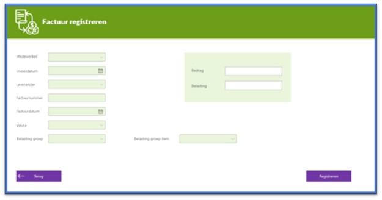
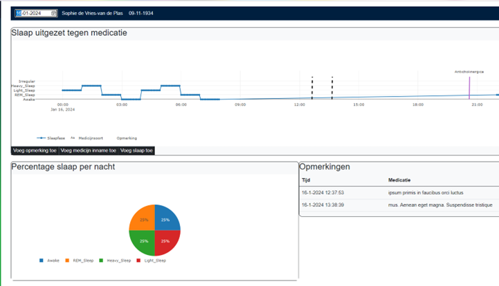
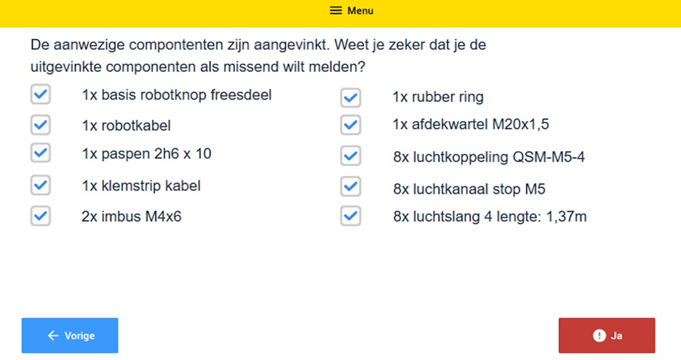

Het laatste semester heb ik een stage gedaan bij Simac Document Solutions. In deze stage hebben wij een archiveringsoplossing ontwikkeld waarin automobielbedrijven hun gegevens kunnen opslaan. Hierbij is er gebruik gemaakt van SQL Server, C#, .NET, Blazor, Azure blob Storage en Azure App Service.
In mijn minor periode heb ik een pre-master voor Software Science gevolgd op de Radboud universiteit. Hierbij heb ik vakken gevolgd over operating systems, algoritmes, calculus, discrete wiskunde, data analyse, matrix calculatie, universitair onderzoek en functioneel programmeren.
Tijdens mijn stage bij Fresh Dynamics heb ik een testapplicatie opgezet waarmee de door het bedrijf ontwikkelde connectoren in een interface getest en getoont kunnen worden. Deze applicatie is ontwikkeld in Power Apps, de low-code software van Microsoft, en is verbonden met Microsoft Dynamics 365. Dynamics is ingewikkelde software, waardoor verschillende acties in de applicatie makkelijker zijn gemaakt. Ik heb hier vooral veel geleerd over Microsoft en low-code software.
Het A.P.P.S. project is een samenwerking tussen OnePlanet en de Han, waarbij er onderzoek wordt gedaan naar technische toepassingen voor Parkinson Patiënten. Tijdens deze stage werd er samengewerkt met een verzorgingshuis voor Parkinson patiënten. Deze wilden een monitorings applicatie voor alle kenmerken van Parkinson zodat de medicijnen van de patiënten op het juiste moment kunnen worden toegedient. In dit project heb ik binnen mijn afdstudeerprofiel van softwaredevelopment gehandeld, waardoor ik vooral heb gekeken naar de techniche eisen en wensen en een proof of concept heb gemaakt. Ik heb hierbij veel geleerd over de zorg en over Parkinson. Daarnaast heb ik ook technische kennis opgedaan over grafieken bij het maken van een proof of concept.
Tijdens mijn stage bij Cellro heb ik met twee andere studenten onderzoek gedaan naar verschillende handleidingapplicaties om werkprocessen te standardiseren. Ik heb hierbij vooral veel geleerd over het opstellen en analyseren van ontwerpeisen en bedrijfsdomeinen. Ook was dit mijn eerste kennismaking met low-code software, in dit geval Tulip, waarmee makkelijk gebouwd kan worden.
In deze stage ben ik bezig geweest met het ontwikkelen van een applicatie voor de verzekeringsbranche waardoor autobedrijven overzicht kunnen houden over de voertuigen. In de applicatie konden voertuigen aangemeld worden bij de RDW en konden verschillende documenten afgedrukt worden. Dit project heb ik samen gedaan met twee medestudenten en een technisch begeleider vanuit het bedrijf. Er werd gebruik gemaakt van Blazor, C#, MySQL en .NET. Ik heb vooral goed leren samenwerken en heb mijn programmeer skills verder kunnen ontwikkelen.